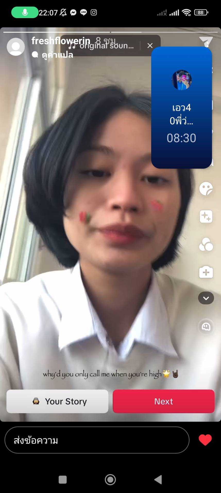
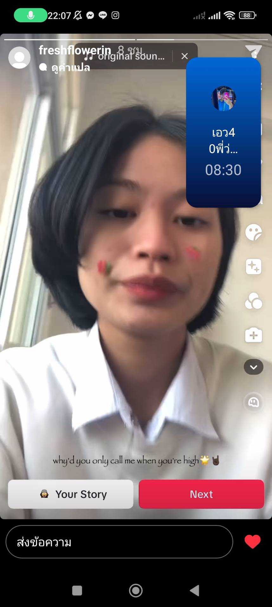
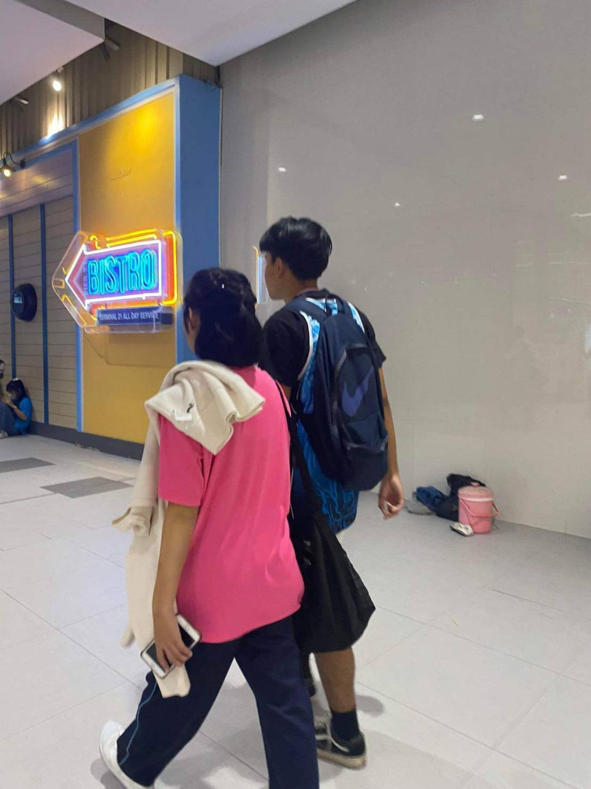
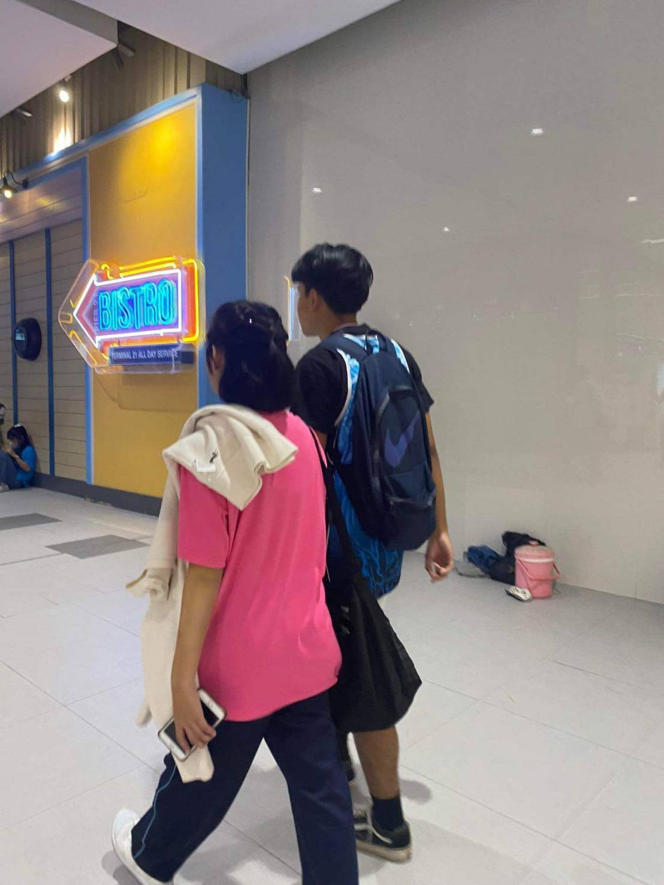
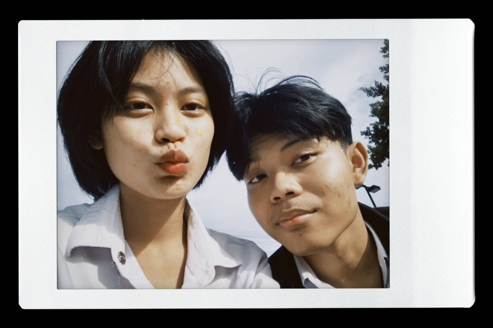
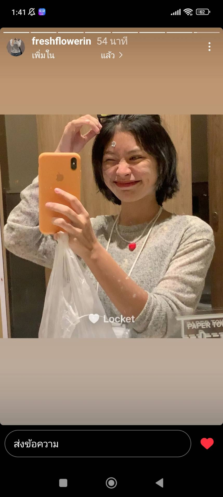
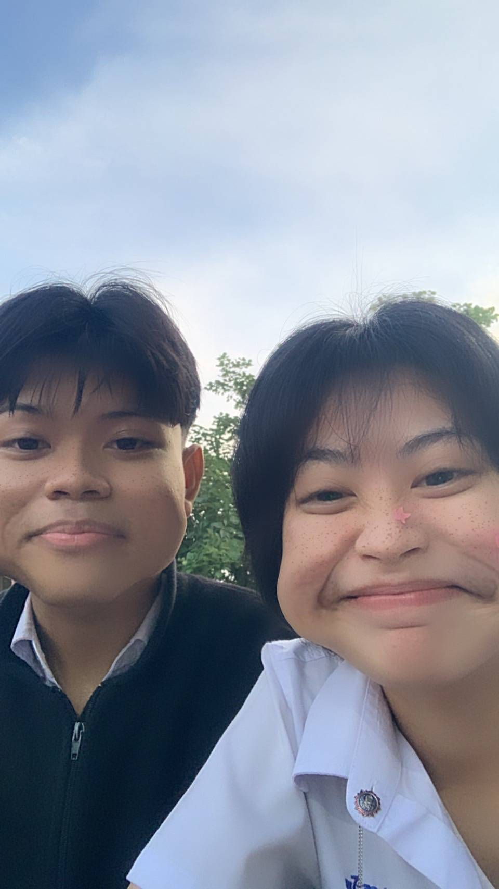
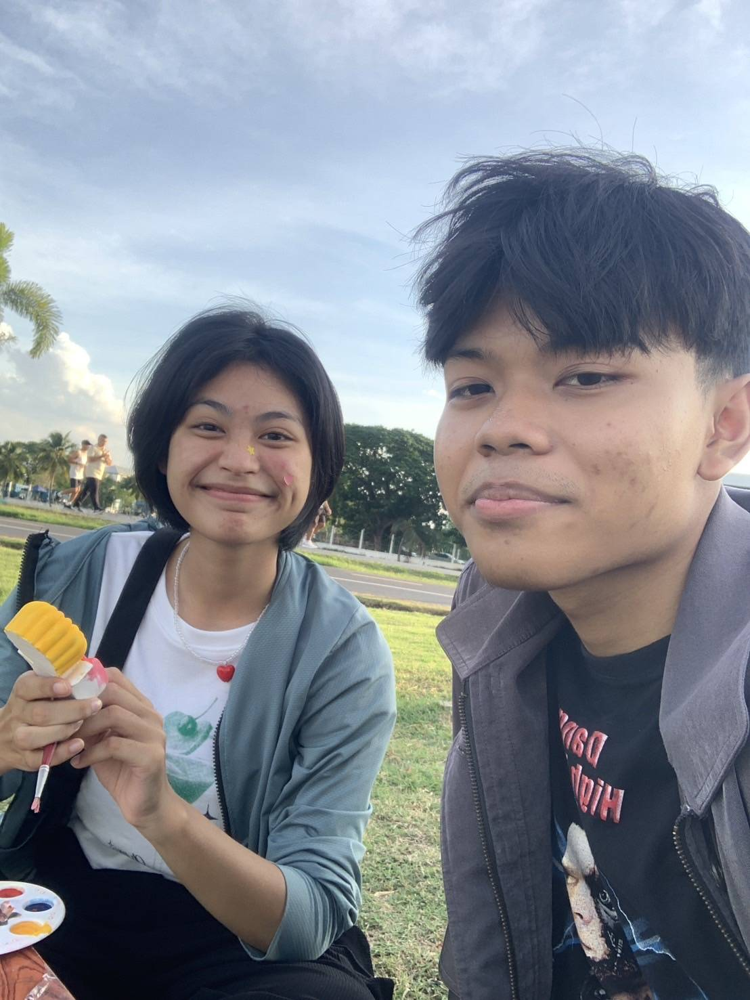

กดดอกไม้สิอ้วน

this is month 1
 

24 มกราคม 2567
อ้วนทักสตอรี่ Dm ตอนนั้นพี่รู้สึกตื่นเต้นนิดหน่อยเพราะตอนนั้นมองอ้วนมาสักพักนึงแล้ว ในใจตอนนั้นคิดว่าอ้วนจะมองพี่ยังไงไม่รู้ แต่ก็ไม่ได้คาดหวังว่าจะได้คุยกันนานอะไรมากมายแต่ก็พยายามชวนอ้วนคุยให้ได้ 😂
พยายามทักไปหาเพื่อไม่ให้ขาดระยะอยากให้มันต่อเนื่องเลยโกหกไปว่า "วันนี้เหมือนเห็นน้องด้วย" แต่ก็ได้ผลด้วย😆
แต่ช่วงนั้นก็แบบมีคิดมากนิดหน่อยเพราะว่าอ้วนชอบขอนอนตอน 4 ทุ่ม เลยคิดเองว่าอ้วนไม่อยากคุยด้วยรึปาวเลยโกหกขอไปนอน(แต่วันนั้นก็โกหกพี่ว่าไปนอนแต่ไปเล่น ตต เดะโดนนนน) แต่ก็ไม่อยากอะไรเพราะกลัวอ้วนจะรำคาญเพราะยังไม่ได้เป็นไรกัน
this is month 2
 

เข้าเดือนกุมภาพันธ์ ตอนนั้นรู้สึกอ้วนกับพี่บอกเริ่มบอกฝันดีกัน เริ่มมามอนิ่งแล้ว และก็เป็นเดือนที่ได้คุยกับอ้วนตัวจริง เป็นตอนที่ความสัมพันธ์เริ่มชัดเจนขึ้น แต่ก็ชอบคิดมากแบบถ้าอ้วนมากลัวทำตัวไม่ถูกแล้วกลัวอ้วนไม่ชอบ
ตอนแรกพี่เกร็งมากที่เจออ้วนเพราะไม่เคยทำอะไรแบบนี้ ไม่คิดว่าตัวเองจะเดินไปส่งหนูได้ด้วยซ้ำเพราะเขิน🤣 แต่ก็ผ่านไปได้ด้วยดี ขอบคุณงานกีฬาสีวันนั้น😂
และเดือนนี้เป็นเดือนที่พี่ตัดสินใจขอหยุดคุยกับอ้วนตอนนั้นแบบนอยอ้วนเรื่องที่ชอบกดแต่อีโมจิจนแบบพี่คิดมากว่าหนูไม่อยากคุยกับพี่รึป่าว แต่เอาจริงๆตอนหนูส่งมาว่าเป็นห่วงพี่ที่พี่มีเรื่องเครียดพี่ทำใจยากมากที่จะขอเลิกคุยกับอ้วน น้ำตาตกด้วย แต่ก็นั้นแหละเดือนกุมภาาา
this is month 3

เดือนนี้ตอนที่พี่ไม่ได้คุยกับหนูมันเหงาๆเคว้งๆยังไงไม่รู้ พอเวลาเห็นหนูพี่อยากเข้าไปดูมากแต่บางทีก็ต้องห้ามตัวเอง มีอยู่วันนึงดู รถไฟฟ้ามาหานะเธอ ดูแล้วนึกถึงหนูอะละมันยิ่งทำให้พี่คิดถึงหนูมาก ช่วงนั้นนอนฟังเพลงทุกคืนแล้วถามตัวเองว่า จะกลับไปดีมั้ย กลัวหนูปฏิเสธ เพราะรู้สึกดีมากตอนกลับไปคุยกับหนูช่วงวันเกิดหนูพยายามจะคุยกับหนูให้เยอะที่สุด แล้วไม่กี่วันต่อมาก็ทักไปเลยขอคืนดีเป็นไงเป็นกัน ตอนที่หนูยอมให้พี่กลับไปคุยวันนั้นพี่มีความสุขมากแล้วสัญญากับตัวเองว่าจะไม่ทำแบบนี้กับหนูอีกแล้ว🥺 (ร้องไห้ป่ะเนี่ย)
this is month 4

เดือนต่อมาเอาจริงๆนี่อาจจะเป็นเดือนทที่พี่กลัวเสียหนูไปอีกครั้งมากๆเลย มันเป็นเรื่องที่พี่คิดแล้วคิดอีกถ้าบอกหนูกลัวหนูมองพี่เป็นคนงี่เง่าคือ เรื่องที่ชอบรีโพสต์เพลงเศร้า เกี่ยวกับคนเก่าไรงี้ ทำให้พี่คิดว่าหรือว่าพี่ควรพอ แต่ด้วยความที่ไม่อยากเสียหนูไปอีกเลย ถามตรงๆตอนนั้น ขอบคุณอ้วนนะที่ไม่ทำให้พี่เสียอ้วนไปอีกครั้งนึง และหลังจากนนั้นอ้วนก็ทำให้พี่มั่นใจขึ้นว่าอ้วนนี่แหละ แฟนพี่555555555555555555555 🤣🤣🤣
แล้วก็ช่วงที่เล่นสงกรานต์ที่เจอหนูพี่ก็เขินๆเอาจริงๆทำไรไม่ค่อยถูกด้วยแต่ทำเป็นกล้าไปงั้น เอาจริงๆแอบห่วงหนูนะตอนนั้นแต่ก็เรายังไม่ได้เป็นไรกันจะบอกให้หนูไปห้ามปะแป้งหนุ่มก็ไม่ได้😂 ตอนนั้นเริ่มมีการหวงเกิดขึ้น55555555555
this is month 5

เดือนนี้รู้สึกอะไรๆจะดีขึ้นไปหมดทุกอย่างอ้วนไปชลแต่เราคุยกันทุกวันเหมือนยิ่งคุยยิ่งสนิทมีอะไรก็เอาให้กันดูรูปตอนเด็ก แม้แต่รูปตอนอ้วนหลับ5555555555
เราคุยกันว่าจะให้พี่จะไปส่งทางไหนดีพี่ก็ไม่เข้าใจมากหรอกเพราะไม่เคยไปแต่ก็พยายามหาทางสืบจนได้ว่าทางไหนไปบ้านอ้วนจะได้คุ้นทาง🤣 ช่วงนั้นเป็นช่วงที่วิทลัยใกล้เปิดเลยชอบถามเรื่องตารางเรียนเพราะถ้าเลิกพร้อมกันจะได้ไปส่งอ้วนบ่อยๆ😆
เปิดเทอมวันแรกก็ไปนั่งคุยกับอ้วนเลยเขินมากๆวันนั้นแต่เก็บอาการละได้ไปส่งด้วยแต่ตอนนั้นยังอ๋องไปส่งอ้วนผิดป้ายนิดนึง55555555555 แล้วก็ได้ไปไนท์กับอ้วนด้วยมีความสุขมากไม่คิดว่าเราจะไปไหนด้วยกันเร็วขนาดนี้5555555555555555
this is month 6

และแล้วเดือนนี้ก็มาถึง เดือนนี้เป็นครั้งแรกที่นัดอ้วนเที่ยวเลยไม่คิดด้วยว่าจะได้ไปไหนต่อไหนเยอะขนาดนี้😂 อ้วนพาพี่ไปนุ้นนี้สนุกมากโดยเฉพาะตอนหาทางไปบุ้งเกือบหลง55555555555 ละเป็นวันที่พี่คิดไว้นานแล้วว่าจะขออ้วนเป็นแฟน😳 ตอนนั้นคิดอะไรอยู่ไม่รู้น่าอยู่ๆก็พูดนั่งระบายสีด้วยกันไม่พูดไรเลย555555555555555 แต่ความรู้สึกตอนนั้นมันดีมากจริงๆ แบบไม่คิดว่าเราจะมาไกลถึงตรงนี้(น้ำตาจะไหลตอนพิมพ์55555555555) แล้วเป็นเดือนพี่ที่มีความสุขมากเพราะได้ไปไหนกับอ้วนบ่อยมากกกก งั้นอยู่กับพี่นานๆนะอ้วน ถึงจะมีน้อยใจอะไรก็ขอให้เราคุยกันนะขอให้เหมือนทุกครั้งที่อ้วนน้อยใจพี่หรือพี่น้อยใจอ้วน งั้นครบรอบก็มีเรื่องจะเล่าแค่นี้แหละะ แบร่😝